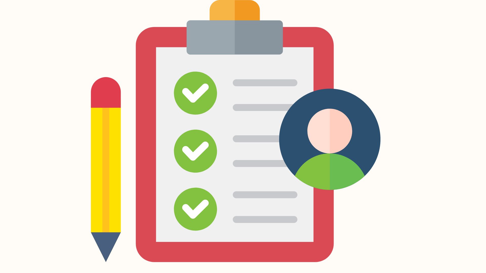

¿Cómo se evaluará el proyecto?

En este apartado podréis conocer cómo se evaluará el desarrollo del proyecto y qué aspectos se tendrán en cuenta durante el proceso de aprendizaje. La evaluación no se centrará únicamente en el resultado final de la carta digital de cócteles, sino también en el trabajo realizado a lo largo de las diferentes fases del proyecto, la participación, la creatividad, el trabajo en equipo y la aplicación correcta de los contenidos trabajados en clase.
Para ello, la evaluación se organizará en dos partes: por un lado, los criterios de evaluación, que indican qué aprendizajes y competencias se valorarán, y por otro, los instrumentos de evaluación, que serán las herramientas utilizadas para recoger evidencias y valorar vuestro trabajo durante el proyecto.